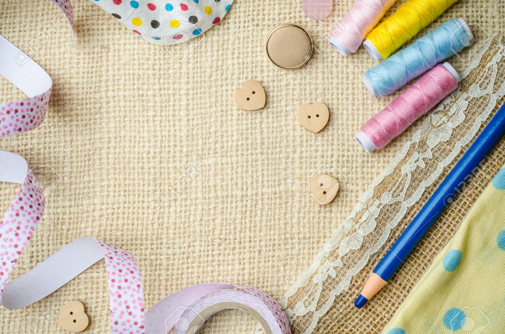

Wir sind leidenschaftliche Handwerker, die sich der Schaffung einzigartiger und handgefertigter Produkte verschrieben
haben.
Unser Team besteht aus talentierten Künstlern und Handwerkern, die ihre Fähigkeiten und Kreativität nutzen, um wunderschöne, individuelle Stücke zu kreieren.
Bei SuperFluffy legen wir großen Wert auf Qualität, Originalität und Liebe zum Detail. Jedes unserer Produkte wird sorgfältig von Hand gefertigt, wodurch es zu einem einzigartigen Kunstwerk wird, das nicht nur schön anzusehen ist, sondern auch eine Geschichte erzählt.
Unser Sortiment umfasst eine vielfältige Auswahl an handgefertigten Schmuckstücken, Wohnaccessoires, Kleidungsstücken und mehr. Egal, ob Sie nach einem besonderen Geschenk suchen oder sich selbst mit etwas Einzigartigem verwöhnen möchten, bei uns werden Sie sicher fündig.

Wir glauben an die Bedeutung von Handwerkskunst und Individualität und sind stolz darauf, Produkte anzubieten, die mit Hingabe und Leidenschaft gefertigt wurden. Vielen Dank, dass Sie uns unterstützen und Teil unserer Handmade-Community sind!
Entdecken Sie die Schönheit von Handgemachtem mit SuperFluffy.
 Accounts
Accounts
 Vietnam
Vietnam Deutsch
Deutsch English
English